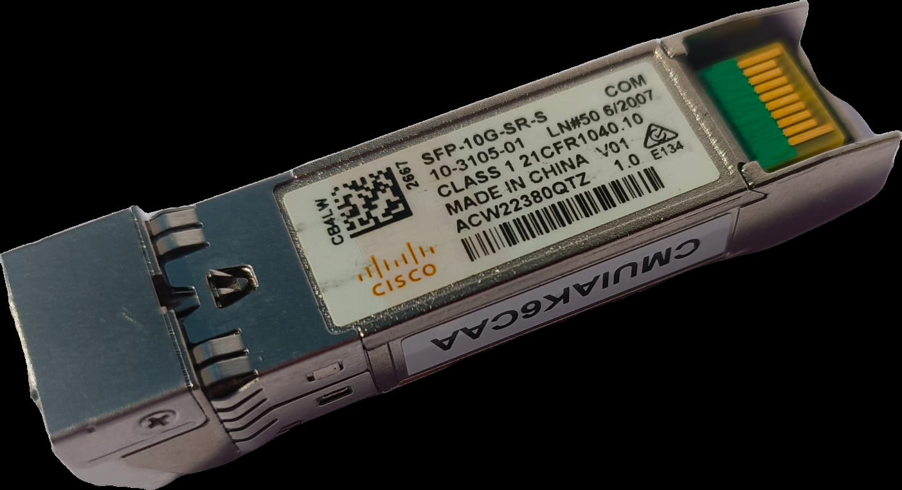
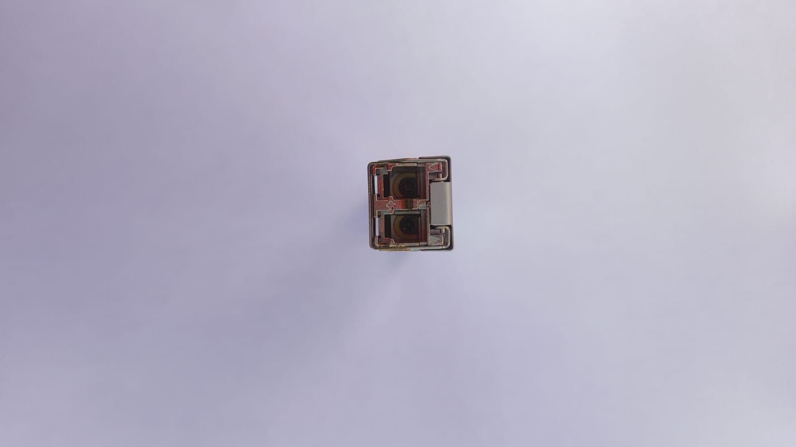
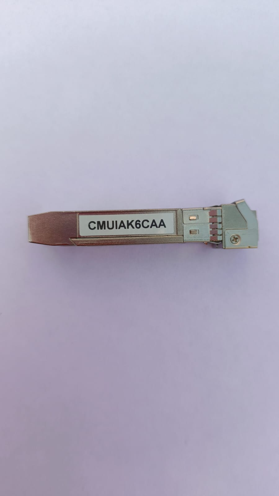
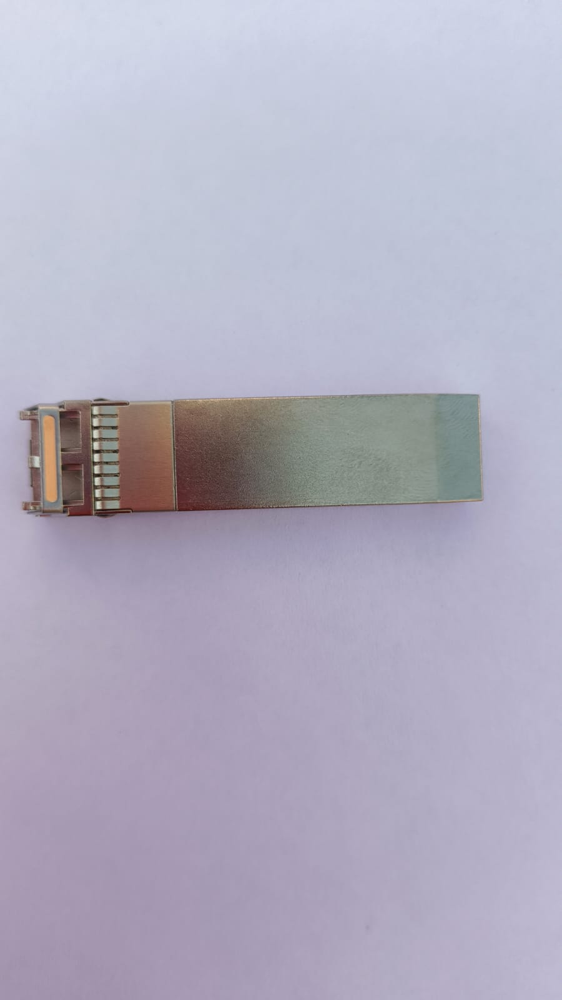
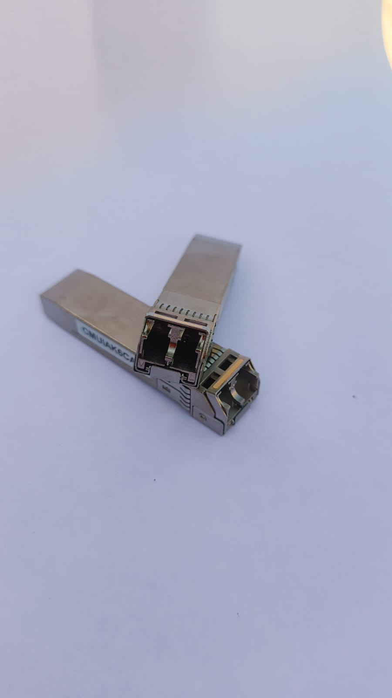

Hardware Deep Dive: Cisco SFP-10G-SR-S
In the world of homelabs and enterprise networking, 10 Gigabit Ethernet (10GbE) is the standard for backbone connectivity. I recently acquired a set of Cisco transceivers for my switch uplinks. Below is a technical breakdown of the hardware.
1. Visual Identification
Based on the physical inspection of the module, we can decode exactly what hardware we are dealing with.

The label provides the critical data:
- Model:
SFP-10G-SR-S - Class: Class 1 Laser Product (21CFR1040.10)
- Serial Number:
ACW22380QTZ - Origin: Made in China
2. Technical Specifications
The SFP-10G-SR-S is part of Cisco's "S-Class" optics. It is designed for multimode fiber (MMF) applications.
| Feature | Specification |
|---|---|
| Form Factor | SFP+ (Enhanced Small Form-factor Pluggable) |
| Data Rate | 10 Gbps (10 Gigabit Ethernet) |
| Wavelength | 850 nm (Nanometers) |
| Connector | Duplex LC |
| Max Distance | 300m (OM3 Fiber) / 400m (OM4 Fiber) |
3. The "S-Class" Distinction
You might notice the -S at the end of the model number. This distinguishes it from the standard SFP-10G-SR.
- Enterprise vs. Carrier: The "S-Class" is designed for Enterprise and Data Center environments. It lacks some of the advanced features required by telecommunications carriers (like OTN/WAN PHY support).
- Temperature Range: This is a "COM" (Commercial) temperature range module, capable of operating between 0°C to 70°C (32°F to 158°F).
- Cost: Because it removes legacy non-Ethernet protocols, the S-Class is generally more affordable while maintaining full 10Gb Ethernet performance.
4. Physical Architecture

The Optical Interface: Figure 2 shows the optical bore. The SFP+ uses a Vertical-Cavity Surface-Emitting Laser (VCSEL) to transmit light at 850nm.
- Tx (Transmit): Sends light pulses.
- Rx (Receive): Uses a photodiode to detect incoming light.

CLEI Code: The sticker reading CMUIAK6CAA is the Common Language Equipment Identifier. This 10-character alphanumeric code is used by the telecommunications industry to identify equipment types and features uniformly.
5. Installation & Commands
When inserting this into a Cisco switch (like a Catalyst or Nexus), the golden fingers on the bottom mate with the switch port contacts.

To verify the module status in the CLI, use the following commands:
# Check transceiver details
Switch# show interface transceiver details
# Verify inventory and serial numbers
Switch# show inventory
# If using non-Cisco hardware (generic unlock)
Switch(config)# service unsupported-transceiver